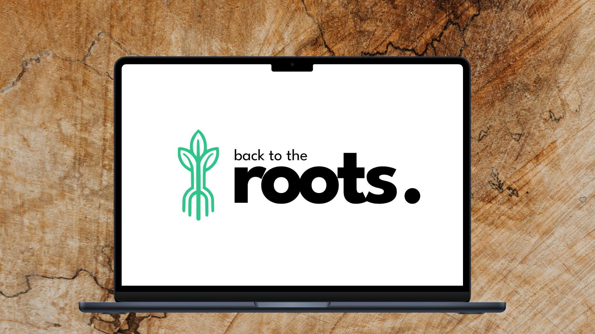
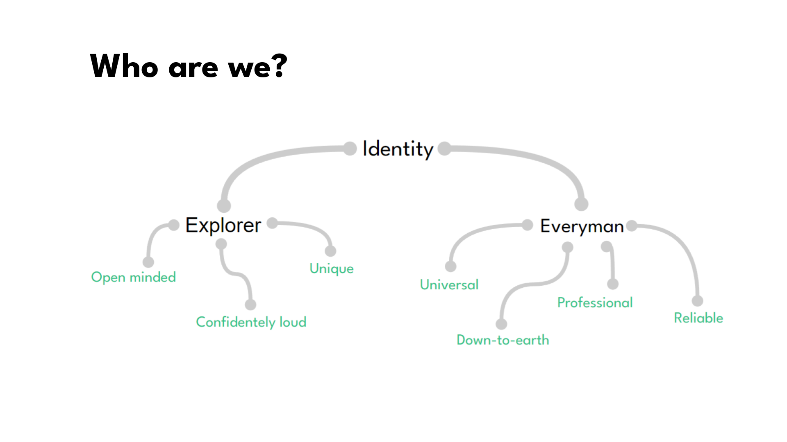
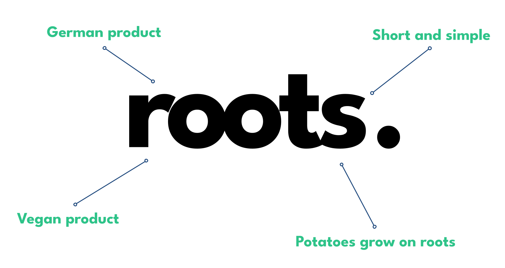
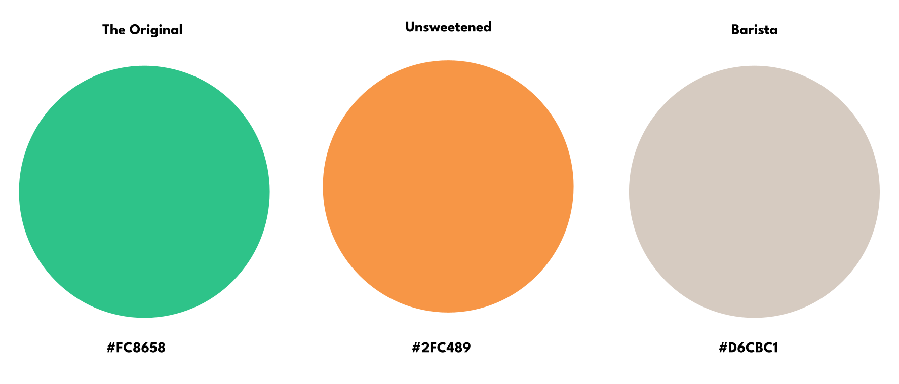
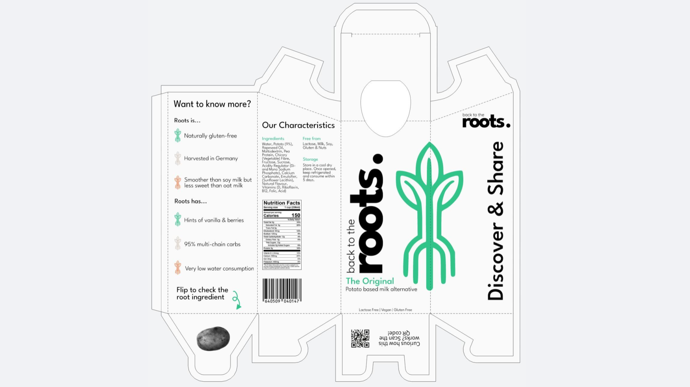
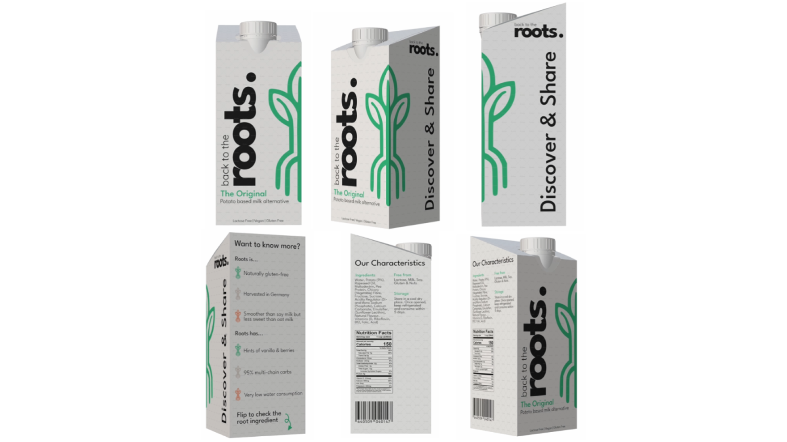
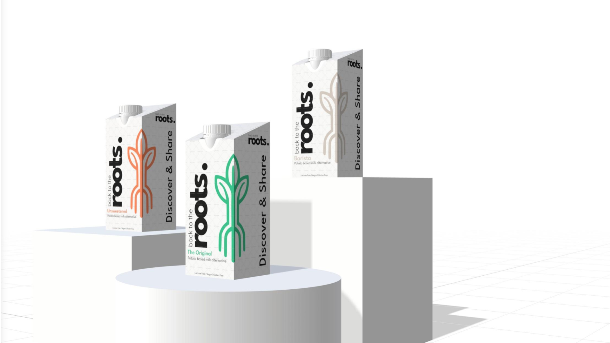

Repositioning an innovative agricultural solution as a premium wholesale asset for the hospitality industry.
An innovative agricultural producer approached us with a highly sustainable, allergen safe milk alternative formulated entirely from locally harvested German potatoes. With an amazing technical foundation already in place, they were ready to establish a powerful market presence. To successfully introduce this innovation alongside established plant-based brands like Oatly and Alpro, they needed a strategic brand identity and a precise positioning framework designed to capture their unique competitive advantage.
Through market analysis, we uncovered a clear opportunity in the hospitality sector. Restaurants regularly juggle a complicated, expensive inventory of multiple plant milks to accommodate guest allergies. Because our specific potato formulation is entirely free from lactose, gluten, nuts, and soy, it serves as a universal kitchen asset. We shifted the strategy away from retail shelves toward B2B kitchens, positioning the product as an all-in-one solution built to streamline commercial workflows.
Turning a humble potato into a trusted wholesale asset meant building a really solid identity structure. During validation sprints with industry stakeholders, we found an interesting tension between two core directions: the authentic, down to earth vibe of local farming versus the boldly confident performance of our technical formula. To blend them smoothly without diluting our message, we leaned into a dual archetypal strategy.

We combined the pioneering drive of the Explorer (our bold choice to extract milk from potatoes) with the warm, universally accessible stability of the Everyman (our absolute commitment to allergen safe inclusion). This balance created the perfect brand voice to communicate cleanly with purchasing managers, blending a highly reliable tone with a beautifully progressive edge.
We built the visual universe around the core brand name: roots., honoring raw, organic origins while using the trailing period as a structural anchor. To ensure high legibility on intense wholesale inventory sheets, our typography relies on a clean geometric sans serif typeface with uniform line weights for quick readability in fast paced work environments.

Color functions as a practical tool in busy barista environments. We established three sub variants using muted, earthy tones: Forest Green commands The Original foundation, Warm Ochre identifies the Unsweetened choice for recipes, and Earthy Espresso marks the high-stability Barista liquid built to steam smoothly into hot coffee profiles.

When it came to the packaging, we wanted to bring our minimalist ideas to life in a way that actually made sense on the floor. We threw out typical, loud supermarket graphics and focused entirely on the reality of a busy restaurant. Since nobody in a fast paced kitchen has time to read fine print, we structured the front panels to prioritize lightning fast reading, making vital allergen safety icons big and bold so baristas can grab the right box at a single glance.



Working on roots. completely flipped my perspective on how deep branding actually goes. It proved that a brand is not just a visual layer, it is all about perception and psychology. People do not just buy a product, they link their entire experience and trust to the personality behind the company. Diving into brand archetypes taught me that you cannot try to be everything to everyone. You have to lean into your core character and communicate with absolute consistency to build true brand recognition. When your category and archetype are crystal clear, customers instantly understand your story, which builds the emotional bridge that drives long term loyalty.